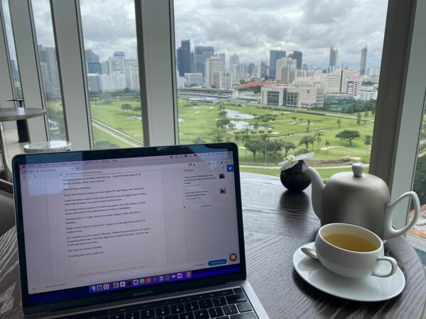

Newsletter #2
This newsletter was originally published on the Revue platform, which Twitter (now X) killed after being taken over by Elon Musk. I now republish it here. My latest newsletters are on Convertkit.
I’m back in Bangkok after a mixed holiday and workation.
I initially planned for 3 weeks of holidays.
Then I took on a new freelance project, so 2 weeks OOO was the max.
I spent the last week of my holiday working, while I was in Korea.
And that was refreshing.
A new environment creates so much space for new ideas, new motivation.
I used my father-in-law’s motorcycle and drove around Geoje island, where, other than Koreans, not many foreign tourists come.
No foreign tourists means no co-working spaces. And only Korean tourists means that most of the coffee bars are empty on weekdays.
I worked from 6 -7 coffee shops in multiple villages, cities and next to beaches. And used the motorcycle to drive in between.
It generates so much freedom, even though I’m working.
What is nice is that it’s explorative. It opens my idea generating mind, my creative mind.
So I decided to do the same in Bangkok. Rather than working from the same co-working every day, I will once again explore Bangkok, see it with new eyes every day.
And keep my sense of wonder.
It’s requires a little more work to find something new, because I’ve been around in Bangkok and I know most of the good coffee bars for working.
But keeping my sense of wonder also means trying new modes of transportation (like public transport, by foot, or while running).
The work has to be done, and idea generation is not the end of the line, sometimes you just need to go heads down and get stuff done.
But for now I’m enjoying the view from the Waldorf Astoria’s coffee bar, with a beautiful scenery of the city’s golf terrain.
Have a great week ahead!
